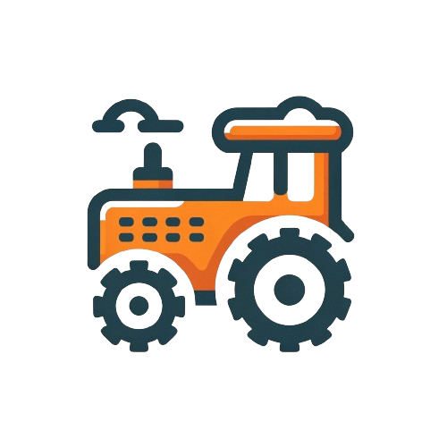

Landbrug
Landbruget spiller en betydelig rolle i vores kuldioxid-fodaftryk. Det bidrager til CO2-udledninger gennem forskellige aktiviteter, såsom brugen af fossile brændstoffer i landbrugsmaskiner, produktion og anvendelse af gødning samt jordprocesser, der frigiver kuldioxid. Derudover udleder husdyrhold, især køer og får, metan, en potent drivhusgas
